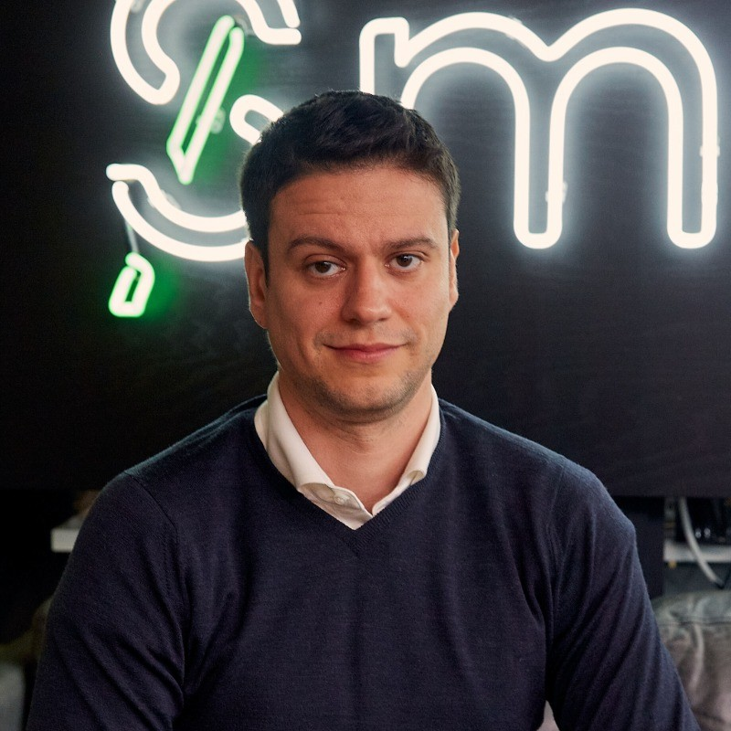

The people behind the platform
100+ people across London and Malta. 65% engineers. One shared obsession: making markets work better.
Leadership

Jason Trost
I founded Smarkets in 2008 with a simple belief: fairness should be at the heart of every market, and the power of markets is the best way to achieve it. Built by traders, for traders, our platform reflects the principles I learned as an equities trader — precision, transparency, and a relentless focus on value. As an underdog in the sports betting industry, we've stood out by offering the best odds and the lowest commissions — empowering customers to make smarter decisions and maximize their potential.

William Chambers
At Smarkets, our goal is simple: deliver the best prices and the best product experience — without compromise. Efficiency is built into our DNA. I drive a relentless focus on execution to build an organization that operates with a leanness our competitors can't match. We apply a test-and-learn approach to everything we do, and it's this agility that has enabled us to capture market share in some of the world's most competitive, heavily regulated markets.
Meet the team
A few of the people building Smarkets, in their own words.

Eli Abramovitch
"Building a prediction market that handles millions of events in real time — there's nothing quite like it. The problems here are genuinely hard, and the team is phenomenal."

Greg Le Guyader
"Every market is a puzzle. We're constantly refining our models to provide the sharpest prices — it's the kind of challenge that keeps you coming back every day."

Andrei Craciunoiu
"We're making prediction markets intuitive for everyone — not just quants. The best product work happens when complexity disappears and the user just gets it."
Flavio Cordeiro
"We sit on an incredible dataset — millions of trades, real-time odds, user behavior. Turning that into insights that actually move the needle is what gets me excited."

Sarah Hilal
"What makes Smarkets special is the people — curious, driven, and genuinely kind. My job is to make sure this stays the best place they've ever worked."
Stephen Lyon
"Running lean is in our DNA. We treat every pound like it's our own — that discipline is what lets us offer the best value to customers while building a sustainable business."
Our Teams
Where you might fit in.
Engineering
65% of the company. Building exchange infrastructure in Rust, Python, and React. High-autonomy teams owning critical systems end-to-end.
Trading & Market Making
Providing deep liquidity and sharp pricing across all markets. Sophisticated algorithms meeting our market participants where they are.
Product
Designing experiences that make complex markets accessible. Every feature built around trader and customer needs.
Data & Analytics
Turning market data into actionable intelligence. Powering decisions across the organization with insights and tooling.
Operations
Keeping the platform running 24/7 across multiple jurisdictions. Customer success, payments, and platform reliability.
Legal & Compliance
Navigating regulation across UK, Malta, and beyond. AML, responsible trading, and license management built into the platform.
People Team
Hiring, culture, and making Smarkets a place people love to work. From onboarding to events, they keep the human side running.
Marketing
Brand, partnerships, and growth for both Smarkets and SBK. From SailGP to Bournemouth to Hibernian FC.
How We Work
High-Autonomy Teams
Small teams with real ownership. No rigid hierarchies—just passionate people taking responsibility for what matters.
Radical Transparency
Company financials shared daily. Town halls every 2-3 weeks with direct CEO Q&A. Everyone knows what's happening.
Competitive Compensation
Benchmarked against top-tier tech companies and reviewed regularly. Equity participation so you share in the company's growth.
Our office
St. Katharine Docks, next to Tower Bridge, London. Plus our Malta operations hub.
See the officeOur Commitment to Diversity
We're building a team that reflects the diversity of the markets we serve and the world we operate in. We believe different perspectives drive better decisions and stronger outcomes.